Graphs of the Sine and Cosine Functions

White light, such as the light from the sun, is not actually white at all. Instead, it is a composition of all the colors of the rainbow in the form of waves. The individual colors can be seen only when white light passes through an optical prism that separates the waves according to their wavelengths to form a rainbow.
Light waves can be represented graphically by the sine function. In the chapter on Trigonometric Functions, we examined trigonometric functions such as the sine function. In this section, we will interpret and create graphs of sine and cosine functions.
Graphing Sine and Cosine Functions
Recall that the sine and cosine functions relate real number values to the x- and y-coordinates of a point on the unit circle. So what do they look like on a graph on a coordinate plane? Let’s start with the sine function. We can create a table of values and use them to sketch a graph. Table 1 lists some of the values for the sine function on a unit circle.
Plotting the points from the table and continuing along the x-axis gives the shape of the sine function. See Figure 2.

Notice how the sine values are positive between 0 and which correspond to the values of the sine function in quadrants I and II on the unit circle, and the sine values are negative between and which correspond to the values of the sine function in quadrants III and IV on the unit circle. See Figure 3.

Now let’s take a similar look at the cosine function. Again, we can create a table of values and use them to sketch a graph. Table 2 lists some of the values for the cosine function on a unit circle.
As with the sine function, we can plots points to create a graph of the cosine function as in Figure 4.
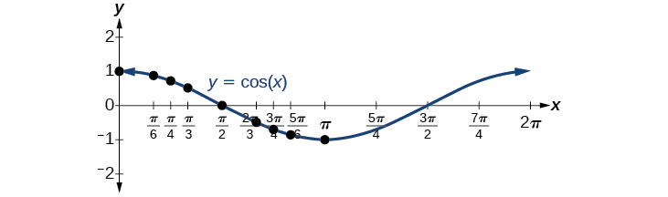
Because we can evaluate the sine and cosine of any real number, both of these functions are defined for all real numbers. By thinking of the sine and cosine values as coordinates of points on a unit circle, it becomes clear that the range of both functions must be the interval
In both graphs, the shape of the graph repeats after which means the functions are periodic with a period of A periodic function is a function for which a specific horizontal shift, P, results in a function equal to the original function: for all values of in the domain of When this occurs, we call the smallest such horizontal shift with the period of the function. Figure 5 shows several periods of the sine and cosine functions.
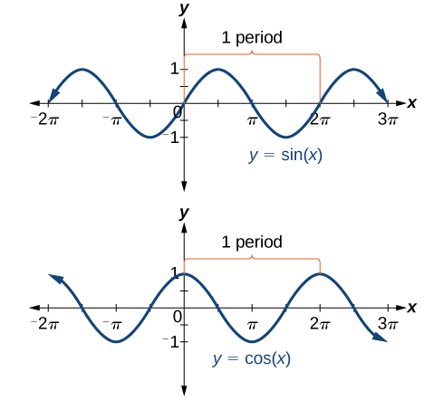
Looking again at the sine and cosine functions on a domain centered at the y-axis helps reveal symmetries. As we can see in Figure 6, the sine function is symmetric about the origin. Recall from The Other Trigonometric Functions that we determined from the unit circle that the sine function is an odd function because Now we can clearly see this property from the graph.

Figure 7 shows that the cosine function is symmetric about the y-axis. Again, we determined that the cosine function is an even function. Now we can see from the graph that

Investigating Sinusoidal Functions
As we can see, sine and cosine functions have a regular period and range. If we watch ocean waves or ripples on a pond, we will see that they resemble the sine or cosine functions. However, they are not necessarily identical. Some are taller or longer than others. A function that has the same general shape as a sine or cosine function is known as a sinusoidal function. The general forms of sinusoidal functions are
Determining the Period of Sinusoidal Functions
Looking at the forms of sinusoidal functions, we can see that they are transformations of the sine and cosine functions. We can use what we know about transformations to determine the period.
In the general formula, is related to the period by If then the period is less than and the function undergoes a horizontal compression, whereas if then the period is greater than and the function undergoes a horizontal stretch. For example, so the period is which we knew. If then so the period is and the graph is compressed. If then so the period is and the graph is stretched. Notice in Figure 8 how the period is indirectly related to
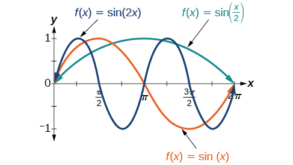
Identifying the Period of a Sine or Cosine Function
Determine the period of the function
Solution
Let’s begin by comparing the equation to the general form
In the given equation, so the period will be
Determining Amplitude
Returning to the general formula for a sinusoidal function, we have analyzed how the variable relates to the period. Now let’s turn to the variable so we can analyze how it is related to the amplitude, or greatest distance from rest. represents the vertical stretch factor, and its absolute value is the amplitude. The local maxima will be a distance above the horizontal midline of the graph, which is the line because in this case, the midline is the x-axis. The local minima will be the same distance below the midline. If the function is stretched. For example, the amplitude of is twice the amplitude of If the function is compressed. Figure 9 compares several sine functions with different amplitudes.

Identifying the Amplitude of a Sine or Cosine Function
What is the amplitude of the sinusoidal function Is the function stretched or compressed vertically?
Solution
Let’s begin by comparing the function to the simplified form
In the given function, so the amplitude is The function is stretched.
Analyzing Graphs of Variations of y = sin x and y = cos x
Now that we understand how and relate to the general form equation for the sine and cosine functions, we will explore the variables and Recall the general form:
The value for a sinusoidal function is called the phase shift, or the horizontal displacement of the basic sine or cosine function. If the graph shifts to the right. If the graph shifts to the left. The greater the value of the more the graph is shifted. Figure 11 shows that the graph of shifts to the right by units, which is more than we see in the graph of which shifts to the right by units.
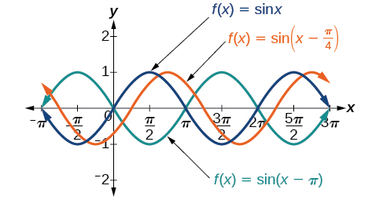
While relates to the horizontal shift, indicates the vertical shift from the midline in the general formula for a sinusoidal function. See Figure 12. The function has its midline at
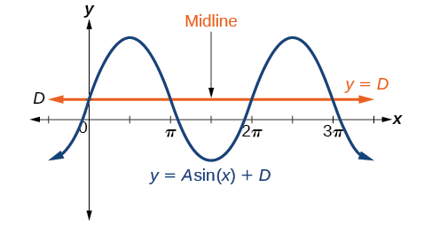
Any value of other than zero shifts the graph up or down. Figure 13 compares with which is shifted 2 units up on a graph.

Identifying the Phase Shift of a Function
Determine the direction and magnitude of the phase shift for
Solution
Let’s begin by comparing the equation to the general form
In the given equation, notice that and So the phase shift is
or units to the left.
Analysis
We must pay attention to the sign in the equation for the general form of a sinusoidal function. The equation shows a minus sign before Therefore can be rewritten as If the value of is negative, the shift is to the left.
Identifying the Vertical Shift of a Function
Determine the direction and magnitude of the vertical shift for
Solution
Let’s begin by comparing the equation to the general form
In the given equation, so the shift is 3 units downward.
Identifying the Variations of a Sinusoidal Function from an Equation
Determine the midline, amplitude, period, and phase shift of the function
Solution
Let’s begin by comparing the equation to the general form
so the amplitude is
Next, so the period is
There is no added constant inside the parentheses, so and the phase shift is
Finally, so the midline is
Analysis
Inspecting the graph, we can determine that the period is the midline is and the amplitude is 3. See Figure 14.

Identifying the Equation for a Sinusoidal Function from a Graph
Determine the formula for the cosine function in Figure 15.
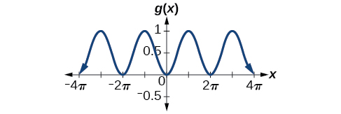
Solution
To determine the equation, we need to identify each value in the general form of a sinusoidal function.
The graph could represent either a sine or a cosine function that is shifted and/or reflected. When the graph has an extreme point, Since the cosine function has an extreme point for let us write our equation in terms of a cosine function.
Let’s start with the midline. We can see that the graph rises and falls an equal distance above and below This value, which is the midline, is in the equation, so
The greatest distance above and below the midline is the amplitude. The maxima are 0.5 units above the midline and the minima are 0.5 units below the midline. So Another way we could have determined the amplitude is by recognizing that the difference between the height of local maxima and minima is 1, so Also, the graph is reflected about the x-axis so that
The graph is not horizontally stretched or compressed, so and the graph is not shifted horizontally, so
Putting this all together,
Identifying the Equation for a Sinusoidal Function from a Graph
Determine the equation for the sinusoidal function in Figure 17.
![A graph of 3cos(pi/3x-pi/3)-2. Graph has amplitude of 3, period of 6, range of [-5,1].](../../media/CNX_Precalc_Figure_06_01_017.jpg)
Solution
With the highest value at 1 and the lowest value at the midline will be halfway between at So
The distance from the midline to the highest or lowest value gives an amplitude of
The period of the graph is 6, which can be measured from the peak at to the next peak at or from the distance between the lowest points. Therefore, Using the positive value for we find that
So far, our equation is either or For the shape and shift, we have more than one option. We could write this as any one of the following:
- a cosine shifted to the right
- a negative cosine shifted to the left
- a sine shifted to the left
- a negative sine shifted to the right
Choosing to use the cosine function, we observe that the peak, which would normally be at , is at , and given the horizontal compression factor of , we get .
While any of these would be correct, the cosine shifts are easier to work with than the sine shifts in this case because they involve integer values. So our function becomes
Again, these functions are equivalent, so both yield the same graph.
Graphing Variations of y = sin x and y = cos x
Throughout this section, we have learned about types of variations of sine and cosine functions and used that information to write equations from graphs. Now we can use the same information to create graphs from equations.
Instead of focusing on the general form equations
we will let and and work with a simplified form of the equations in the following examples.
Graphing a Function and Identifying the Amplitude and Period
Sketch a graph of
Solution
Let’s begin by comparing the equation to the form
- Step 1. We can see from the equation that so the amplitude is 2.
- Step 2. The equation shows that so the period is
- Step 3. Because is negative, the graph descends as we move to the right of the origin.
- Step 4–7. The x-intercepts are at the beginning of one period, the horizontal midpoints are at and at the end of one period at
The quarter points include the minimum at and the maximum at A local minimum will occur 2 units below the midline, at and a local maximum will occur at 2 units above the midline, at Figure 19 shows the graph of the function.
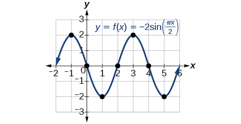
Graphing a Transformed Sinusoid
Sketch a graph of
Solution
- Step 1. The function is already written in general form: This graph will have the shape of a sine function, starting at the midline and increasing to the right.
- Step 2. The amplitude is 3.
- Step 3. Since we determine the period as follows.
The period is 8.
- Step 4. Since the phase shift is
The phase shift is 1 unit.
- Step 5. Figure 20 shows the graph of the function.

Figure 20 A horizontally compressed, vertically stretched, and horizontally shifted sinusoid
Identifying the Properties of a Sinusoidal Function
Given determine the amplitude, period, phase shift, and vertical shift. Then graph the function.
Solution
Begin by comparing the equation to the general form and use the steps outlined in Example 9.
- Step 1. The function is already written in general form.
- Step 2. Since the amplitude is
- Step 3. so the period is The period is 4.
- Step 4. so we calculate the phase shift as The phase shift is
- Step 5. so the midline is and the vertical shift is up 3.
Since is negative, the graph of the cosine function has been reflected about the x-axis.
Figure 21 shows one cycle of the graph of the function.

Using Transformations of Sine and Cosine Functions
We can use the transformations of sine and cosine functions in numerous applications. As mentioned at the beginning of the chapter, circular motion can be modeled using either the sine or cosine function.
Finding the Vertical Component of Circular Motion
A point rotates around a circle of radius 3 centered at the origin. Sketch a graph of the y-coordinate of the point as a function of the angle of rotation.
Solution
Recall that, for a point on a circle of radius r, the y-coordinate of the point is so in this case, we get the equation The constant 3 causes a vertical stretch of the y-values of the function by a factor of 3, which we can see in the graph in Figure 22.
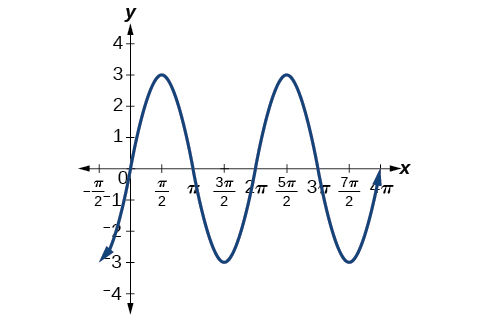
Analysis
Notice that the period of the function is still as we travel around the circle, we return to the point for Because the outputs of the graph will now oscillate between and the amplitude of the sine wave is
Finding the Vertical Component of Circular Motion
A circle with radius 3 ft is mounted with its center 4 ft off the ground. The point closest to the ground is labeled P, as shown in Figure 23. Sketch a graph of the height above the ground of the point as the circle is rotated; then find a function that gives the height in terms of the angle of rotation.
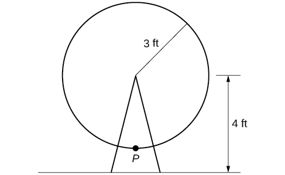
Solution
Sketching the height, we note that it will start 1 ft above the ground, then increase up to 7 ft above the ground, and continue to oscillate 3 ft above and below the center value of 4 ft, as shown in Figure 24.

Although we could use a transformation of either the sine or cosine function, we start by looking for characteristics that would make one function easier to use than the other. Let’s use a cosine function because it starts at the highest or lowest value, while a sine function starts at the middle value. A standard cosine starts at the highest value, and this graph starts at the lowest value, so we need to incorporate a vertical reflection.
Second, we see that the graph oscillates 3 above and below the center, while a basic cosine has an amplitude of 1, so this graph has been vertically stretched by 3, as in the last example.
Finally, to move the center of the circle up to a height of 4, the graph has been vertically shifted up by 4. Putting these transformations together, we find that
Determining a Rider’s Height on a Ferris Wheel
The London Eye is a huge Ferris wheel with a diameter of 135 meters (443 feet). It completes one rotation every 30 minutes. Riders board from a platform 2 meters above the ground. Express a rider’s height above ground as a function of time in minutes.
Solution
With a diameter of 135 m, the wheel has a radius of 67.5 m. The height will oscillate with amplitude 67.5 m above and below the center.
Passengers board 2 m above ground level, so the center of the wheel must be located m above ground level. The midline of the oscillation will be at 69.5 m.
The wheel takes 30 minutes to complete 1 revolution, so the height will oscillate with a period of 30 minutes.
Lastly, because the rider boards at the lowest point, the height will start at the smallest value and increase, following the shape of a vertically reflected cosine curve.
- Amplitude: so
- Midline: so
- Period: so
- Shape:
An equation for the rider’s height would be
where is in minutes and is measured in meters.
Key Equations
| Sinusoidal functions |
Key Concepts
- Periodic functions repeat after a given value. The smallest such value is the period. The basic sine and cosine functions have a period of
- The function is odd, so its graph is symmetric about the origin. The function is even, so its graph is symmetric about the y-axis.
- The graph of a sinusoidal function has the same general shape as a sine or cosine function.
- In the general formula for a sinusoidal function, the period is See Example 1.
- In the general formula for a sinusoidal function, represents amplitude. If the function is stretched, whereas if the function is compressed. See Example 2.
- The value in the general formula for a sinusoidal function indicates the phase shift. See Example 3.
- The value in the general formula for a sinusoidal function indicates the vertical shift from the midline. See Example 4.
- Combinations of variations of sinusoidal functions can be detected from an equation. See Example 5.
- The equation for a sinusoidal function can be determined from a graph. See Example 6 and Example 7.
- A function can be graphed by identifying its amplitude and period. See Example 8 and Example 9.
- A function can also be graphed by identifying its amplitude, period, phase shift, and horizontal shift. See Example 10.
- Sinusoidal functions can be used to solve real-world problems. See Example 11, Example 12, and Example 13.
Section Exercises
Verbal
Why are the sine and cosine functions called periodic functions?
Solution
The sine and cosine functions have the property that for a certain This means that the function values repeat for every units on the x-axis.
How does the graph of compare with the graph of Explain how you could horizontally translate the graph of to obtain
For the equation what constants affect the range of the function and how do they affect the range?
Solution
The absolute value of the constant (amplitude) increases the total range and the constant (vertical shift) shifts the graph vertically.
How does the range of a translated sine function relate to the equation
How can the unit circle be used to construct the graph of
Solution
At the point where the terminal side of intersects the unit circle, you can determine that the equals the y-coordinate of the point.
Graphical
For the following exercises, graph two full periods of each function and state the amplitude, period, and midline. State the maximum and minimum y-values and their corresponding x-values on one period for Round answers to two decimal places if necessary.
Solution
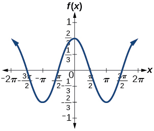
amplitude: period: midline: maximum: occurs at minimum: occurs at for one period, the graph starts at 0 and ends at
Solution
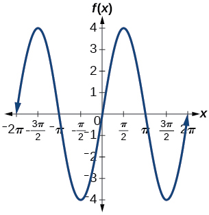
amplitude: 4; period: midline: maximum occurs at minimum: occurs at one full period occurs from to
Solution
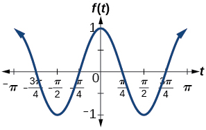
amplitude: 1; period: midline: maximum: occurs at minimum: occurs at one full period is graphed from to
Solution
![A graph of 4cos(pi*x). Grpah has amplitude of 4, period of 2, and range of [-4, 4].](../../media/CNX_Precalc_Figure_06_01_208.jpg)
amplitude: 4; period: 2; midline: maximum: occurs at minimum: occurs at
Solution
![A graph of 3sin(8(x+4))+5. Graph has amplitude of 3, range of [2, 8], and period of pi/4.](../../media/CNX_Precalc_Figure_06_01_210.jpg)
amplitude: 3; period: midline: maximum: occurs at minimum: occurs at horizontal shift: vertical translation 5; one period occurs from to
Solution
![A graph of 5sin(5x+20)-2. Graph has an amplitude of 5, period of 2pi/5, and range of [-7,3].](../../media/CNX_Precalc_Figure_06_01_212.jpg)
amplitude: 5; period: midline: maximum: occurs at minimum: occurs at phase shift: vertical translation: one full period can be graphed on to
For the following exercises, graph one full period of each function, starting at For each function, state the amplitude, period, and midline. State the maximum and minimum y-values and their corresponding x-values on one period for State the phase shift and vertical translation, if applicable. Round answers to two decimal places if necessary.
Solution
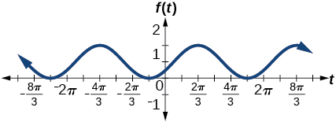
amplitude: 1 ; period: midline: maximum: occurs at minimum: occurs at phase shift: vertical translation: 1; one full period is from to
Solution
![A graph of -sin((1/2)*t + 5pi/3). Graph has amplitude of 1, range of [-1,1], period of 4pi, and a phase shift of -10pi/3.](../../media/CNX_Precalc_Figure_06_01_216.jpg)
amplitude: 1; period: midline: maximum: occurs at minimum: occurs at phase shift: vertical shift: 0
Determine the amplitude, midline, period, and an equation involving the sine function for the graph shown in Figure 26.
![A sinusoidal graph with amplitude of 2, range of [-5, -1], period of 4, and midline at y=-3.](../../media/CNX_Precalc_Figure_06_01_218.jpg)
Solution
amplitude: 2; midline: period: 4; equation:
Determine the amplitude, period, midline, and an equation involving cosine for the graph shown in Figure 27.
![A graph with a cosine parent function, with amplitude of 3, period of pi, midline at y=-1, and range of [-4,2]](../../media/CNX_Precalc_Figure_06_01_219.jpg)
Determine the amplitude, period, midline, and an equation involving cosine for the graph shown in Figure 28.
![A graph with a cosine parent function with an amplitude of 2, period of 5, midline at y=3, and a range of [1,5].](../../media/CNX_Precalc_Figure_06_01_220.jpg)
Solution
amplitude: 2; period: 5; midline: equation:
Determine the amplitude, period, midline, and an equation involving sine for the graph shown in Figure 29.
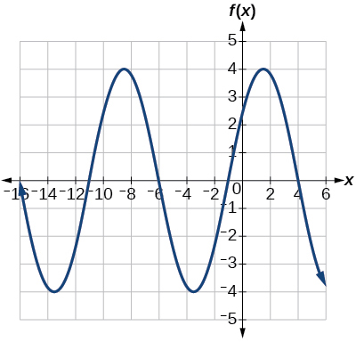
Determine the amplitude, period, midline, and an equation involving cosine for the graph shown in Figure 30.
![A graph with cosine parent function, range of function is [-4,4], amplitude of 4, period of 2.](../../media/CNX_Precalc_Figure_06_01_222.jpg)
Solution
amplitude: 4; period: 2; midline: equation:
Determine the amplitude, period, midline, and an equation involving sine for the graph shown in Figure 31.
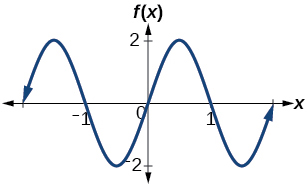
Determine the amplitude, period, midline, and an equation involving cosine for the graph shown in Figure 32.
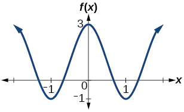
Solution
amplitude: 2; period: 2; midline equation:
Determine the amplitude, period, midline, and an equation involving sine for the graph shown in Figure 33.

Algebraic
For the following exercises, let
On solve
Solution
On solve
Evaluate
Solution
On Find all values of
On the maximum value(s) of the function occur(s) at what x-value(s)?
Solution
On the minimum value(s) of the function occur(s) at what x-value(s)?
Show that This means that is an odd function and possesses symmetry with respect to ________________.
Solution
is symmetric
For the following exercises, let
On solve the equation
On solve
Solution
On find the x-intercepts of
On find the x-values at which the function has a maximum or minimum value.
Solution
Maximum: at ; minimum: at
On solve the equation
Technology
Graph on Explain why the graph appears as it does.
Solution
A linear function is added to a periodic sine function. The graph does not have an amplitude because as the linear function increases without bound the combined function
will increase without bound as well. The graph is bounded between the graphs of
and
because sine oscillates between −1 and 1.
![This image displays a graph of the function h(t) versus t. The horizontal axis represents t, ranging from 0 to 2π, with key markers at π/2, π, and 3π/2. The vertical axis represents h(t), ranging from 0 to 6. The curve starts at the origin (0,0) and rises continuously to approximately (2π, 6). The function exhibits an initial period of increasing slope, followed by a region where the slope decreases (around t=π, where h(t) is about 3), indicating a slowing rate of increase, and then the slope increases again, showing an accelerating rate of increase towards the end of the interval.](../../media/CNX_Precalc_Figure_06_01_226.jpg)
Graph on Did the graph appear as predicted in the previous exercise?
Graph on and verbalize how the graph varies from the graph of
Solution
There is no amplitude because the function is not bounded.
![The image presents a graph of a periodic function plotted on a coordinate system featuring an inverted y-axis. The x-axis, labeled "X", spans from 0 to 2pi, with key markings at pi/2, pi, 3pi/2, and 2pi. The y-axis, labeled "f(x)", shows its origin (0) at the top, and positive integer values from 1 to 5 increase as one moves downwards. The curve commences at the point (0,0), which represents a local minimum for the function's value. It then descends, indicating an increase in the function's value, reaching a local maximum of 2 around x=pi/2. Following this, the curve ascends, showing a decrease in value, returning to a local minimum of 0 at x=pi. The function then continues to descend, with its value increasing further to a global maximum of 5 around x=3pi/2, before finally ascending back to a local minimum of 0 at x=2pi, thereby completing one full period of oscillation.](../../media/CNX_Precalc_Figure_06_01_228.jpg)
Graph on the window and explain what the graph shows.
Graph on the window and explain what the graph shows.
Solution
The graph is symmetric with respect to the y-axis and there is no amplitude because the function’s bounds decrease as
grows. There appears to be a horizontal asymptote at
.
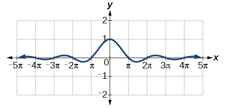
Real-World Applications
A Ferris wheel is 25 meters in diameter and boarded from a platform that is 1 meter above the ground. The six o’clock position on the Ferris wheel is level with the loading platform. The wheel completes 1 full revolution in 10 minutes. The function gives a person’s height in meters above the ground t minutes after the wheel begins to turn.
- ⓐ Find the amplitude, midline, and period of
- ⓑ Find a formula for the height function
- ⓒ How high off the ground is a person after 5 minutes?
Analysis
The negative value of results in a reflection across the x-axis of the sine function, as shown in Figure 10.
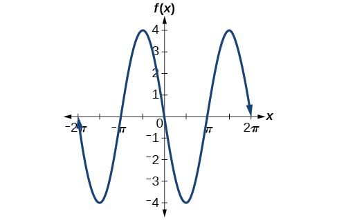